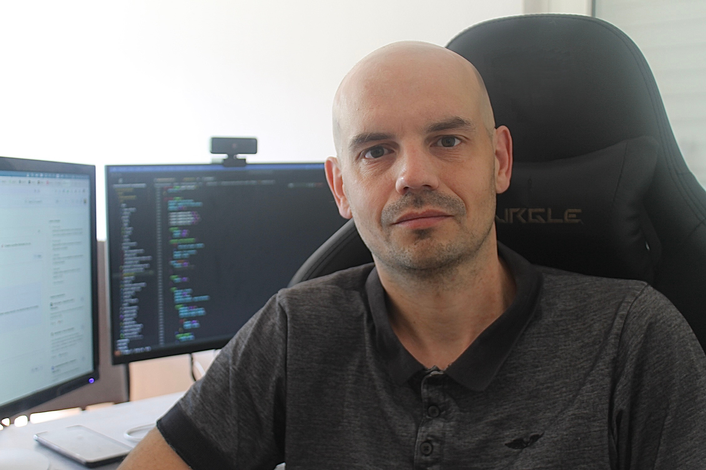

Ingénieur Fullstack
Jonathan ATTON - 40 ans
Compétences
Niveau avancé
Niveau intermédiare
Formation
A propos
En tant que développeur logiciel sénior, je suis prêt à apporter une valeur ajoutée immédiate à votre entreprise. Mon expérience multisectorielle (banque, juridique, RGPD, laboratoire d'analyses, sport) me permet de comprendre et de m'adapter rapidement à des contextes variés. Mon expertise technique assure la création de solutions logiciels capables de répondre aux défis les plus complexes.
Au-delà du code, je mets à profit mes compétences complémentaires en matière de stratégie décisionnelle, de marketing et d'encadrement de projets & équipes pour assurer une gestion intégrée du cycle de vie produit.
Expériences
Développeur sénior – TVH Consulting
Intégrateur et développeur spécialisé sur la solution Microsoft Dynamics. Conception et déploiement d'applications métiers avancées exploitant la puissance de Canvas Apps et la flexibilité de React pour répondre aux besoins critiques de gestion d'entreprise.
Création de la plateforme RacesConnect
Création et promotion des plateformes mobiles RacesConnect et Canicompet permettant aux clubs sportifs
de gérer et chronométrer (manuellement et automatiquement) leurs compétitions en autonomie.
La plateforme est utilisée par la fédération délégataire FFSLC comme socle pour sa stratégie
informatique.
Création de la plateforme CaniGPS
Création d'une solution de suivi GPS pour chiens, intégrant des fonctionnalités avancées comme la localisation en temps réel, les clôtures virtuelles, les alertes et le suivi d'activité.
Développeur sénior Eurofins
Multinational dans l’analyse en laboratoire (terre, eau, nourriture, amiante…). J’ai travaillé avec l’équipe en charge du logiciel de suivi des analyses dans les laboratoires avant de devenir le développeur principal d’un projet phare en R&D centré sur l’analyse automatique par microscope électronique.
Responsable Informatique ActeCil
Société spécialisée dans les audits et logiciels RGPD. Mise en place de l’environnement informatique (CRM, Cloud, Site WEB …), création d'outils SAS (APM) et constitution d'une petite équipe informatique. Travail sur des appels d’offres, avec des clients grands comptes (Thalès, groupe La Poste).
Développeur Euro Information
Consultant pour la société Abylsen, en mission chez Euro-Information. Développement de l'environnement des statistiques, des sites internet et des applications bancaires. Conception d’un CMS pour le Crédit Mutuel.
Stage chez Calaos spécialisée en domotique : Intégration Flickr, scénario.
Participation au projet libre & international Enlightenment avec lequel j’ai développé des capacités de travail en équipe à distance et j'ai participé au Google Summer of Code.